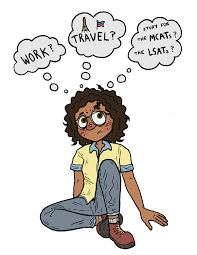
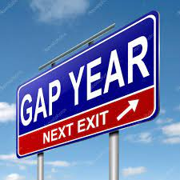
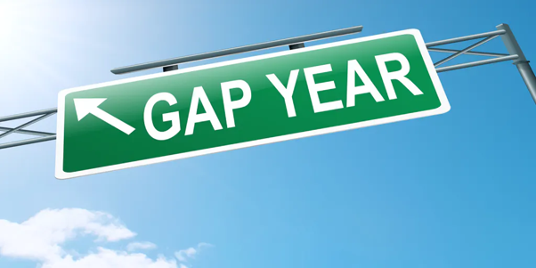
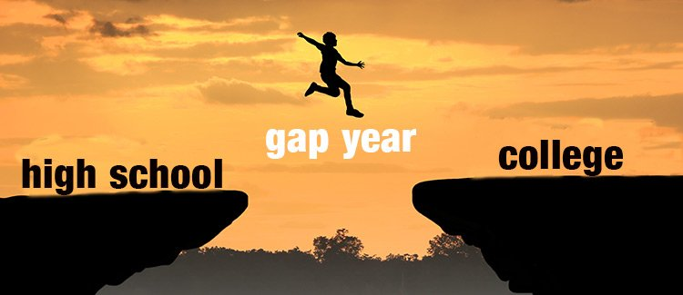

Reflexão sobre estudo #5 - gap year.
Texto escrito entre: 10/02/2022 e 16/02/2022.
Considerações iniciais.
Olá, meu nome é Luiz Esquivel e hoje venho falar sobre o tema "gap year" ou, simplesmente, "pular o ano", esse texto não foi escrito por nenhuma autoridade no assunto, somente alguém que admira e estuda o tema e que acredita que poderia ser melhor divulgado por representar muito auxílio a saúde mental de estudantes. Espero que com o texto de hoje, eu possa alcançar estudantes e que eles reflitam, junto a suas famílias, sobre essa possibilidade.

Um pouco da estrutura do ensino superior no Brasil.
Para um bom começo de texto, vale ressaltar que meu foco são estudantes brasileiros e, por isso, vou falar com foco maior do Brasil, mas não irei me restringir só ao Brasil posto que esse tema já é uma realidade para vários estudantes e de vários países. Na atualidade, o atual sistema educacional brasileiro (que se mantém estruturalmente o mesmo desde sua implementação do século XIX, criado a partir do modelo francês de ensino). Os 2 grandes termos para entender essa estrutura são: linearidade e titulação. O primeiro se refere a educação superior (e ela como um todo também) no Brasil pode ser compreendido a partir de uma linha reta que tem começo, meio e fim. A titulação, se refere que enquanto mais perto 'do fim da linha educacional' você tiver, melhor e maior é seu grau de conhecimento numa área exemplos de título: bacharel, licenciado, bacharel com ênfase em, profissional habilitado e, os mais superiores que são: doutor e mestre.
Esse sistema adotado pelo Brasil evidencia alguns defeitos de nossa estrutura que são:
- excessiva precocidade nas escolhas de ingresso na graduação;
- seleção limitada e pontual para ingresso na graduação (falarei disso mais pra frente);
- elitização da educação universitária;
- viés monodisciplinar da graduação com currículos estreitos e bitolados.
Entre os 16 e 17 anos (não são todos mas a grande parte), os estudantes tomam decisão da vida profissional e pessoal que vão carregar pro resto da vida, ingressando por meio de um vestibular que mede mais a capacidade de memorizar do que de raciocinar ou conhecimento da matéria, o que, de certa forma, possibilita que a universidade se desresponsabilize dos saberes da educação básica dos estudantes.
Em síntese, a estrutura da educação superior necessita ser revisada pelos agentes competentes (como MEC) buscando modernidade e metodologias que caibam na realidade brasileira, mas até lá, cabe ao estudante se postar nesse sistema. Algumas atividades já tem sido realizada sobre esse tema e a mais louvável, ao meu ver, é o BI , uma tentativa de se postar nesse mundo, olhando com um olhar global e interdisciplinar.
Olhando para a estrutura do ensino superior no mundo.
Sei que o mundo é muito grande e que poderíamos falar de vários sistemas educacionais que tem se mostrado, de certa forma, efetivos... porém gostaria de destacar dois: o modelo norte-americano (adotado por Canadá e EUA) e o modelo europeu unificado (adotado pelos membros da União Europeia após o processo de Bolognha do fim da década 1990 e começo da década de 2000).
A arquitetura norte-americana, se baseia em dois níveis: college (pré-graduate) e university (graduate). No primeiro, já na faculdade, o estudante passa por um processo de alinhamento teórico (nas áreas de Humanas, Artes e Ciências) que dura 4 anos e é não profissionalizante [dá o título de bacharel]. O segundo, é uma área escolhida pelo estudante que pode durar de 1 ano e meio até 3 anos que lhe permitirão seguir pro mercado de trabalho, se tornar doscente ou pesquisador de sua área (equivale a um CPL brasileiro).
Já o modelo unificado europeu, se dá a partir de 3 ciclos, o primeiro ciclo tem duração média de 3 anos, é não profissionalizante e tem o objetivo de introduzir matérias comuns a todos os universitários. O segundo ciclo, é profissionalizante, com o objetivo de formar profissionais (engenheiros, médicos, advogados...) e tem duração média entre 1 e 2 anos. O terceiro ciclo, com duração média de 3 ou 4 anos tem o objetivo de formar pesquisadores nas mais diversas áreas do saber.
Em sintese, podemos dizer que a grande diferença entre o modelo brasileiro e os dois descritos acima é a responsabilização da universidade pelo saber básico de seus estudantes e a tentativa de focar em formar profissionais que tenham realmente capacidade de ir no mercado de trabalho e, não somente, tenham um título (um nome) pra isso.

A educação básica e a transição entre esses 2 mundos.
Não é justo comparar a estrutura de educação superior brasileira com a europeia e norte-americana, contudo, uma coisa temos em comum, a transição entre educação básica desses 2 mundos é feito por um processo seletivo... é, mas esse é o único fato que temos em comum, uma vez que o processo dos outros modelos é beeem diferente do processo brasileiro, primeiramente ele acontece a cada 3 meses (e não a cada ano), segundamente ele tem várias etapas que inclui análise de perfil e histórico escolar (e não somente uma provinha estilo enem ou outros vestibulares). Como comparar não é meu foco vou deixar AQUI LINKADO: ingresso no modelo norte-americano e ingresso no modelo unificado europeu.
A educação básica no Brasil é compreendida como: educação infantil, ensino fundamental e ensino médio, que são os locais em que todo brasileiro terá acesso a princípios básicos propostos pela BNCC (Base Nacional Comum Curricular), que envolve português, matemática, lingua estrangeira, filosofia e sociologia, química, física e biologia.
A transição entre a educação superior e a educação básica, no Brasil, é feita por meio de um processo seletivo que muitos estudantes odeiam (e com razão): o vestibular. Ele é, geralmente, uma (a depender do vestibular pode ter 1, 2 ou 3) prova(s) que teoricamente testa conhecimentos do estudante [na prática só vê a capacidade de memorizar princípios e correlacionar eles a alguma coisa].
Em sintese, o vestibular no Brasil, sendo o ENEM (Exame Nacional do Ensino Médio), o mais conhecido é a grande transição entre o mundo da educação básica e da educação superior, porém, seus defeitos nos fazem refletir sobre sua real capacidade de estar no status que está.

O que é gap year?
Poderia começar aqui de muitas formas para tentar explicar o que é gap year, mas quero propor uma reflexão: "qual o papel do eu [estudante] em todo esse sistema educacional?", sei, que as respostas iriam variar muito, contudo, existe um consenso de que o estudante tem um papel central (junto ao professor) nesse sistema, por ser(em) justamente aquele(s) que estão no meio disso tudo.
Depois de 12 anos de educação básica, o que é que se segue? Mais estudo... Um bacharelado, provavelmente o mestrado e depois (talvez) um emprego. Parece um percurso limpinho, sem desvios. Mas há quem prefira quebrar o ciclo por um ano: é o “gap year” ou “pular um ano”. Para descansar, para viajar, para fazer voluntariado, para estudar uma língua ou, simplesmente, para decidir o que fazer a seguir.
É, justamente, desse peso que significa ser estudante que se começou a pensar em gap year, o primeiro formato do gap year foi o chamado 'ano sabático' e, depois, o próprio gap year foi introduzido a partir de 1980 pelo professor americo-estadunidense Cornelius Bull. A diferença entre ano sabático e gap year, se baseia no planejamento que os dois tem. O primeiro, tem uma liberalização e baixo planejamento que simplesmente quer que o estudante pare tudo, para pensar e descansar sem muitas responsabilidades. O segundo, é assumir para si as responsabilidades, tirar um tempo para descanso e planejar sua inserção na faculdade, sabendo o que quer fazer (a partir de uma ampla pesquisa e reflexão) e o que precisa fazer para alcançar seus sonhos, sendo assim, um gap year é: planejado e ordenado.
O termo foi originado como "gap year" ou "pular um ano" pelo fato de que alguns estudantes (de países europeus e dos EUA) já tiravam um ano após viajar e conhecer o mundo antes de entrar na faculdade (ano sabático), porém, o gap year não se trata de um ano, mas de um período que pode ser um ano, menos de um ano ou mais de um ano.
Em sintese, o gap year funciona como um período de transição entre a saída do Ensino Médio e o ingresso no Ensino Superior e pode ser compreendido como a ideia de dar mais espaço aos estudantes para que eles cresçam pessoalmente, consiste em um período de tempo investido em si mesmo para se conhecer mais, sair da rotina e aprender pelo mundo. Vale relembrar, que gap year, apesar de se chamar assim não necessita, necessariamente, ser esse período podendo ser mais longo ou mais curto.

Dados de gap Year.
Seja qual for o motivo que leva um estudante a levantar hipotese do gap year (e existem vários possiveis motivos), o gap year vem se consolidando entre os estudantes. Vamos para algumas pesquisas que nos mostram isso:
- Segundo dados da Associção de GAP da América, cerca 70000 (setenta mil) estudantes norte americanos optam pelo gap year anualmente
- segundo uma outra pesquisa da associação gap year (da europa) ao compararmos período 2009 - 2012 e 2018 - 2021 houve uma crescente maior que 10,5% dos estudantes que optam por gap year (eles não tem dúvida do papel da pandemia nesse cenário)
- segundo uma pesquisa realizada pela Associação Brasileira de Mantenedoras de Ensino Superior (ABMES) trouxe a público que em 2021 apenas 63% dos estudantes concluintes do ensino médio entram em universidades logo em seguida.
Em sintese, de acordo com os dados apresentados percebe-se que o gap year está crescendo lentamente na comunidade estudantil brasileira (apesar de que a pandemia acelerou esse crescimento), porém, já vem se consolidando com bastante força mundo a fora. Dessa forma, essa pode ser uma saída interessante aos estudantes que recentemente terminaram o ensino médio.

Desmitificando mitos no gap year: sua importância psico-social.
Como dito anteriormente, gap year é algo planejado e ordenado, dessa forma não existe somente um tipo de gap year, existem vários tipos que vão variar de acordo com a necessidade e objetivo de cada estudante, se essa for sua escolha vale pesquisar sobre os tipos de gap year, mas ficarei pouco aqui pro texto não ficar muito longo, para ajudar quem tá conhecendo agora essa área de gap year (público-alvo desse texto) vou desmitificar 3 mitos de gap year.
Primeiro mito a derrubar, gap year não é perda de tempo, primeiro essa é uma visão ultrapassada de que as coisas deveriam seguir uma linearidade pré-determinada desde o começo até o fim da vida, as coisas não são e não precisam ser assim, além disso, cresce na maior parte das grandes empresas a quantidade de RH que aponta positivamente para a comunidade 'gapper' (quem faz gap year) como alguém capaz de ter múltiplas vivências e experiências, além de terem mais responsabilidade e saber lidar com tempo e planejamento de atividades.
Segundo mito a derrubar, é que o gap year não vai dificultar sua vida acadêmica, pelo contrário, vai ajudar muito pois você terá melhor discernimento e foco para o que realmente é importante para você.
Terceiro mito a derrubar, gap year não vai dificultar sua entrada e permanência no mundo do trabalho, pelo contrário, por meio do auto conhecimento e da auto valorização você saberá decidir e montar seus próprios percursos o que ajudará a estar em um ambiente de trabalho saudável e produtivo.
Por fim, espero que a quebra desses 5 mitos auxiliem na escolha (ou não escolha) pelo gap year.
Considerações finais.
Portanto, a partir do que foi apresentado é possível inferir que o 'gap year' pode ser uma das melhores saídas para todos os estudantes, desde aqueles que sabem o que querem até aqueles que ainda estão muito indecisos. Afinal, sempre é bom tirar um tempo para viver e fazer o que gosta... E ter isso em um planejamento pode ser uma das melhores saídas. Acredito que é muito dificil para que um estudante tão cedo decida por todo um futuro, decidir seu futuro acadêmico e profissional tão cedo não é uma tarefa nada fácil, é preciso se conhecer para ter discernimento de o que é atual (passageiro/efêmero) e o que é permanente (seu eu de verdade com sonhos e medos), o gap year é uma proposta para fugir um pouco da linearidade acadêmica e partir para aventuras próprias e auto-ditadas, mas lembre-se de planejar o que vai fazer, pois 1 ano pode parecer muito... mas é pouco tempo frente a tudo que vc poderia fazer.
Copyright © 2021 - All Rights Reserved - Reflitacomesquivel